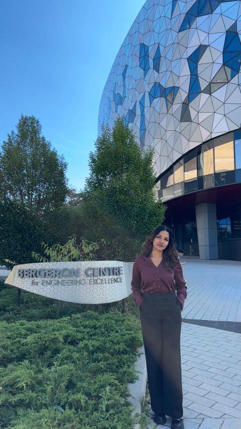
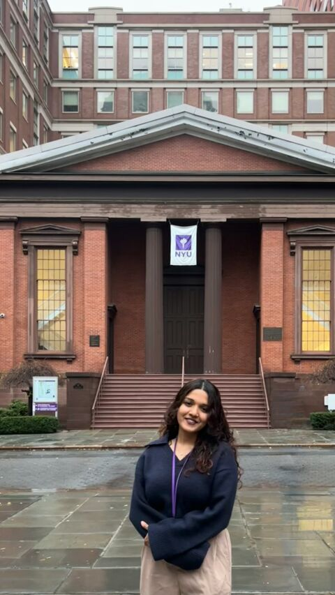
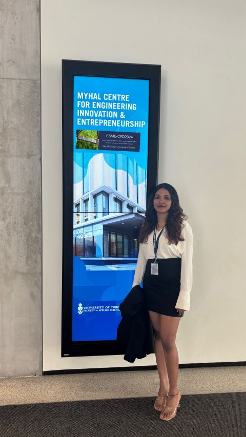

Riya Vasan · Mechanical Engineer
Curious mind.Hands-on
engineer.
I work where materials, mechanical design, and computer vision meet. I enjoy understanding how things work, then finding ways to make them better.
Explore my work


A little about me
From physical materials
to meaningful insights.
My MASc at York University brought together materials research and machine learning. At NYU, I worked with 3D-printed samples, micro-CT scans, and tensile testing. Teaching manufacturing labs taught me just as much about people as it did about engineering.
York UniversityMASc · Mechanical Engineering
NYU TandonMaterials research internship
Design + visionCAD · Simulation · Image analysis
Curiosity goes beyond the lab.
Travel, hostel volunteering, and tourism work have helped me adapt, connect with people, and stay open to new experiences.